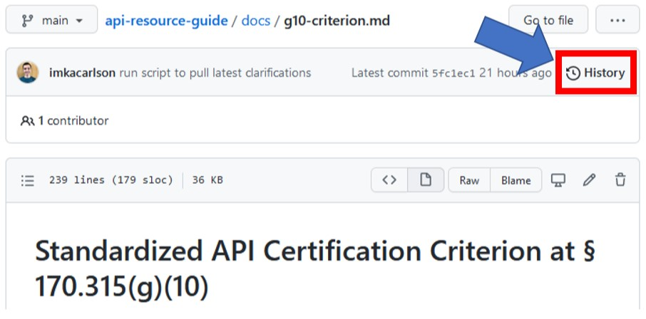
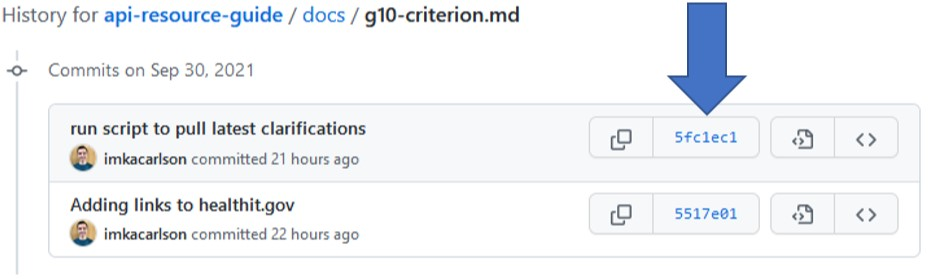
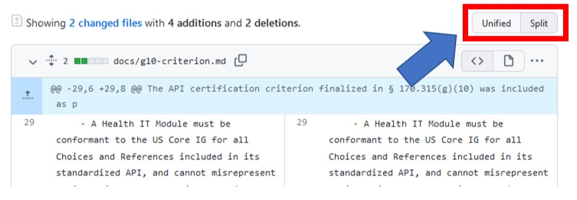

Directory of Published Versions
| Version # | Description of Change | Version Date |
|---|---|---|
| 1 | API Resource Guide PDF (deprecated) | November 30, 2020 |
| 2 | Migrate API Resource Guide PDF content into makrdown website | November 5, 2021 |
| 2.1 | Added additional clarifiation on why API Service Base URL publication is only required for patient-facing APIs (Git commit: bad0ad3) | March 28, 2022 |
Viewing line item differentials in GitHub¶
The code and content for this resource is publicly available on GitHub. On of the key features of GitHub is the ability to easily view line item differentials (diffs) between versions:
- Navigate to the API Resource Guide repository on GitHub: onc-healthit/api-resource-guide.
- The relevant documents containing the ONC certification program information rendered on this website are located in the
docsdirectory of theapi-resource-guiderepository. - Click on a
.mdfile that you want to inspect the history of. - To browse the commit history click on the "History" button in the upper right hand corner of the page.

History button on GitHub - You are now on the page that shows the "commit" history for this file. Click on the button containing the hash of the commit you want to inspect.

Button containing commit hash on GitHub -
Now you can see the specific lines that changed with this commit.
Tip
Toggle between different views on GitHub using the "Unified" and "Split" buttons.

Toggling between "Unified" and "Split" views on GitHub -
Additional information can be found on GitHub Docs: Differences between commit views.